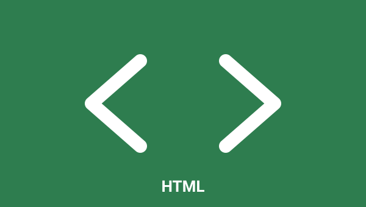

Programación
Realicé programas sencillos y aprendí a programar.

Soy estudiante de Ingeniería en Sistemas, interesado en la tecnología, programación y redes. Me gusta aprender cosas nuevas y trabajar en equipo.
Busco seguir aprendiendo sobre programación, desarrollo de software y redes, además de adquirir experiencia en proyectos relacionados con Ingeniería en Sistemas.
Realicé programas sencillos y aprendí a programar.
Realicé prácticas de redes y aprendí a configurarlas.

Realicé proyectos en equipo y aprendí a organizarme.
